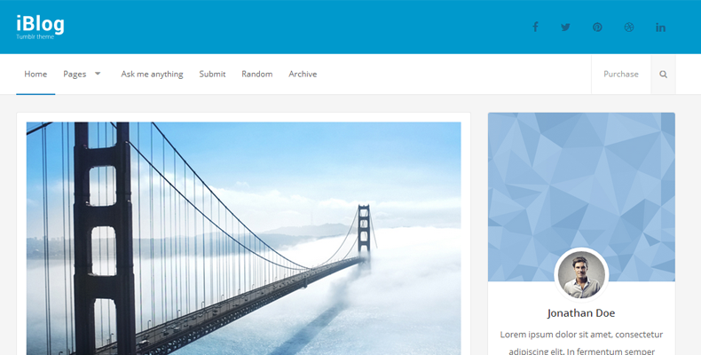
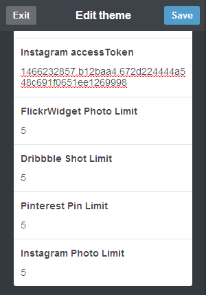

“iBlog” Documentation by “Juan Vargas” v1.0
“iBlog”
Created: 5/26/2015
By: Juan Vargas
Email: 791171@gmail.com
Thank you for downloading my theme. If you have any questions relating to the theme, send me an email Thanks so much!
Table of Contents
A) Preview - top
A) Installation - top
- Unzip iblog.zip
- Inside the folder iblog there is a folder called theme, inside that folder you will find a file called "index.html".
- Open index.html with a text editor like Notepad++,Wordpad, regular notepad sometimes display the content unorganized.
- Go to the Tumblr dashboard, click on the Account icon, then click on your blog name. Once you have done that, a sidebar will appear with a link called "Edit appereance". When you click that button, it will take you to your blog options. Click on the "Edit theme" button, then click on "Edit HTML". Finally, replace everything inside that input with the code from the "index.html" from the unzipped folder.
A) HTML Structure - top
This theme has a responsive layout with two possible columns, in the theme editor area you can choose to display the sidebar or not. The content of the website is located inside the class ".posts_container". The container holds two columns, the posts columns in left and the sidebar column in the right. You can also enable image sliders, there's a full width slider and a boxed slider. The full width slider doesn't change even if the sidebar is not being displayed. The boxed slider changes sizes if the sidebar is not being displayed. If the sidebar is not being displayed, it will have a single column layout and the menu will get smaller to be aligned with the content. The sidebar can hold up to 6 boxes. The photos in the sidebar are retrieved using 4 different APIs, two of them require an API key or an API access token. I will explain how to get this keys in the next section.

B) APIs - top
To be able to display your Instagram photos and your Dribbble shots you will need to get an access tokens for each one. An access token is required because the information you are trying to display is not public, with this access token you can displays anyone's photos as long as they are not private or if they are linked to your account.
Instagram API
There's a YouTube that explains how to get an access token.
https://www.youtube.com/watch?v=LkuJtIcXR68
- First step, click here and fill in all in the input fields. Click on the Security Tab and uncheck "Disable implicit OAuth". Once that is done you will see information of the Application you just created, if not click here.There you will se a list of items, copy the string of numbers and letter that appear next to "CLIENT ID". Also you need the REDIRECT URI, when you register and application you are required to put your domain url.
- We are going to use following url:
https://api.instagram.com/oauth/authorize/?client_id=CLIENT-ID&redirect_uri=REDIRECT-URI&response_type=token
Now we are going to replace the the word "CLIENT-ID" with the string from the previous step. For example, I just created an application and this is my CLIENT ID: b12baa4c848940f48e6e368141adede8. Also, replace REDIRECT-URI with the URL that appears in the application you just created. https://api.instagram.com/oauth/authorize/?client_id=b12baa4c848940f48e6e368141adede8&redirect_uri=http://localhost&response_type=token
- Now, just copy the url with the CLIENT ID and REDIRECT-URI in it and paste in the browser address bar and hit enter. CLick on the Authorize button. Then you will be redirrected to the domain you used to created the application, once it takes you there look at the address bar and you will see something like this:
http://localhost/#access_token=1466232857.b12baa4.672d224444a548c691f0651ee1269998
- Your access token is: 1466232857.b12baa4.672d224444a548c691f0651ee1269998 Now just copy that code into the "Instagram AccessToken" input in the tumblr theme editor. Don't use this access token, I will delete it and it won't work. You should generate your own access token.
- 
Dribbble API
With the Dribbble API you can display your own shots as well as anyone else's shots. Getting a Dribbble Access Token is alot simpler, just go to this link and fill the input fields. Once you complete the registration, information about you application will be displayed. Just copy the string of numbers and letters bellow "Client Access Token".
Flickr API
For the Flickr API, you don't need anything else than just you Flickr ID
Pinterest API
To display you Pinterest pins you will need to include two things, your Pinterest username and the board that you want to display.
Items in each API
The default value of items to display in each carousel slider is one, you can change that limit in the theme editor section. Don't include a limit greater than the items in your account, for example if you have two Intagram Photos and you set the limit to 5, it will most likely display the items in a messy way.
E) Sources and Credits - top
I've used the following images, icons or other files as listed.
Once again, thank you so much for downloading this theme. As I said at the beginning, I'd be glad to help you if you have any questions relating to this theme. No guarantees, but I'll do my best to assist.
Juan Vargas